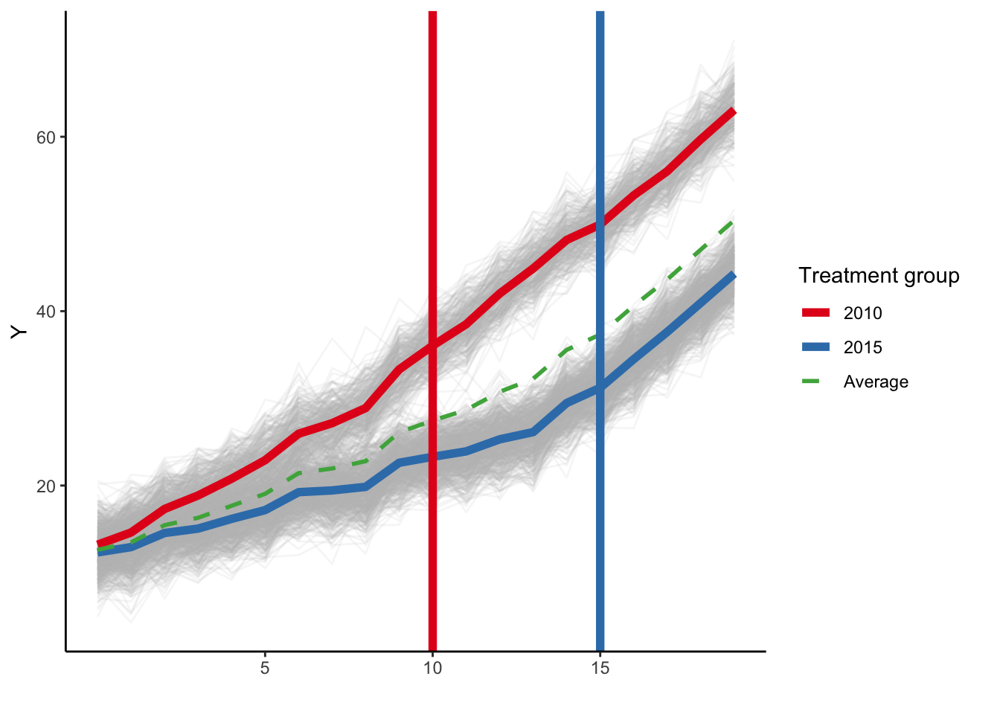
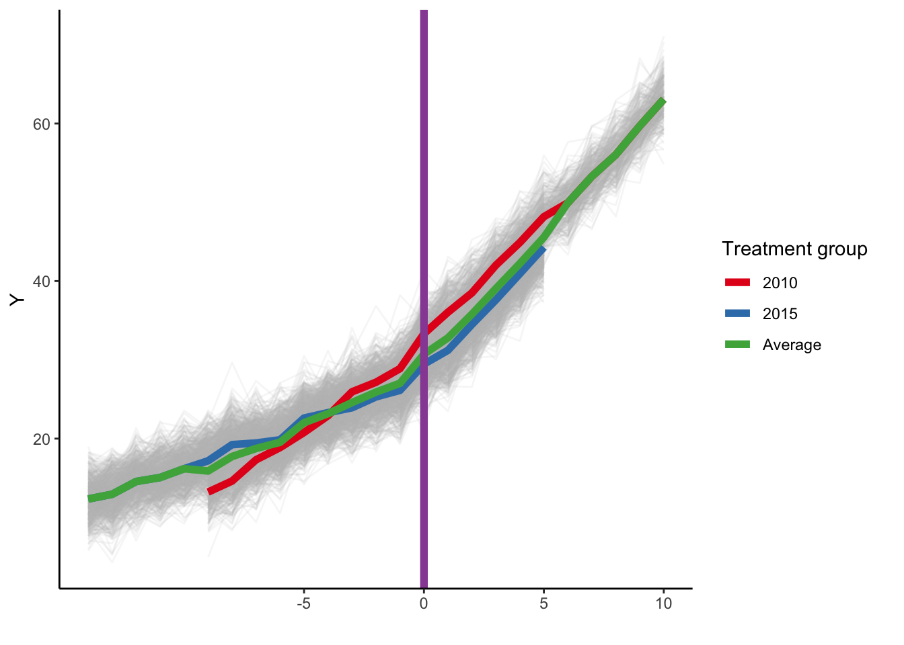
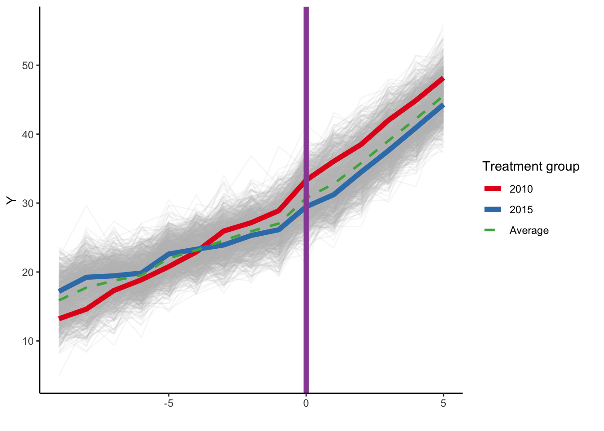
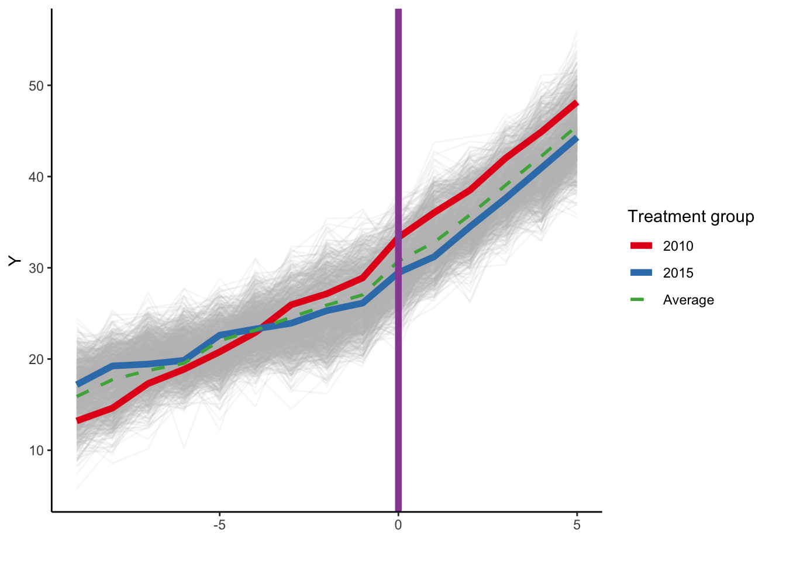

Code
library(here)
library(tidyverse)
library(estimatr)
library(modelsummary)
library(marginaleffects)
library(tinytable)library(here)
library(tidyverse)
library(estimatr)
library(modelsummary)
library(marginaleffects)
library(tinytable)First let’s simulate some data.
set.seed(48620)
# unit fixed effects (unobserved heterogeneity)
unit <- tibble(
unit = 1:1000,
# generate clusters
state = sample(1:30, 1000, replace = TRUE),
unit_fe = rnorm(1000, state/10, 1),
# generate instantaneous treatment effect
#mu = rnorm(nobs, true_mu, 0.2)
mu = 2
)
# year fixed effects (first part)
year <- tibble(
year = 2001:2020,
year_fe = rnorm(length(year), 0, 0.5)
)
# Put the clusters into treatment groups
treat_taus <- tibble(
# sample the clusters randomly
state = sample(1:30, 30, replace = FALSE),
# place the randomly sampled states into 1\{t \ge g \}G_g
cohort_year = sort(rep(c(2010, 2015), times=c(10,20)))
)
# make main dataset
# full interaction of unit X year
dtest <- expand_grid(unit = 1:1000, year = 2001:2020) %>%
left_join(., unit) %>%
left_join(., year) %>%
left_join(., treat_taus) %>%
# make error term and get treatment indicators and treatment effects
# Also get cohort specific trends (modify time FE)
mutate(error = rnorm(1000*20, 0, 2),
treat = ifelse((year >=
cohort_year), 1, 0),
# treatment effect = 3 if 2015, 6 if 2010, annually
mu = ifelse(cohort_year==2015, 2, 1),
tau = ifelse(treat == 1, mu, 0),
# year trends differ by cohort
year_fe = year_fe + (2020 - cohort_year) *
(year - cohort_year) / 5 + 20
) %>%
# calculate cumulative treatment effects
group_by(unit) %>%
mutate(tau_cum = cumsum(tau)) %>%
ungroup() %>%
# calculate the dependent variable
mutate(y = (2020 - cohort_year) +
unit_fe + year_fe + tau_cum + error)
# Relabel 2018 cohort as never-treated
# mutate(cohort_year = ifelse(cohort_year == 2018, Inf, cohort_year))
# bring in simulated DiD dataset
ds <- dtest %>%
# read_rds(here("data",
#"did-sim-data.rds")) %>%
mutate(year0 = year - 2001,
yearc = year - cohort_year,
cohort_2015 = ifelse(cohort_year == 2015, 1, 0))Here is a plot of the simulated data, with the averages plotted for each cohort and the time of intervention marked on the graph.

What is the causal effect of the intervention in the 2010 cohort?
Let’s do the ITS for the early treated cohort. First, let’s estimate the models separately for each cohort. We’ll use the lm_robust function from estimatr to easily get cluster robust standard errors.
# models
m_c2010 <- lm_robust(y ~ year0 * treat,
data = subset(ds, cohort_year == 2010),
clusters = state)
m_c2015 <- lm_robust(y ~ year0 * treat,
data = subset(ds, cohort_year == 2015),
clusters = state)
modelsummary(list("2010 cohort" = m_c2010,
"2015 cohort" = m_c2015),
fmt = 2,
gof_omit = 'DF|Deviance|R2|AIC|BIC|RMSE')| 2010 cohort | 2015 cohort | |
|---|---|---|
| (Intercept) | 12.97 | 12.04 |
| (0.28) | (0.22) | |
| year0 | 2.03 | 1.09 |
| (0.01) | (0.00) | |
| treat | -6.44 | -25.92 |
| (0.12) | (0.36) | |
| year0 × treat | 0.92 | 1.95 |
| (0.01) | (0.02) | |
| Num.Obs. | 6520 | 13480 |
| Std.Errors | by: state | by: state |
The slope estimates are basically what we specified in the simulation (1 for the 2010 cohort and 2 for the 2015 cohort). Now let’s estimate the effect of the intervention at the end of follow-up, setting year0=19 and estimate the difference by treatment status, using the marginaleffects package. We’ll estimate the average predictions under each treatment regime and then estimate the difference.
# predictions for 2010 cohort
p_2010 <- avg_predictions(m_c2010, variables = "treat",
newdata = datagrid(year0 = 19))
d_2010 <- comparisons(m_c2010, variables = "treat",
newdata = datagrid(year0 = 19))
p_2010$term = c("Untreated", "Treated")
d_2010$term = "Difference"
p_2010 <- p_2010 %>%
bind_rows(d_2010)
# predictions for 2015 cohort
p_2015 <- avg_predictions(m_c2015, variables = "treat",
newdata = datagrid(year0 = 19))
d_2015 <- comparisons(m_c2015, variables = "treat",
newdata = datagrid(year0 = 19))
p_2015$term = c("Untreated", "Treated")
d_2015$term = "Difference"
p_2015 <- p_2015 %>%
bind_rows(d_2015)
modelsummary(list("2010 cohort" = p_2010,
"2015 cohort" = p_2015), fmt=2,
gof_omit = 'DF|Deviance|R2|AIC|BIC|RMSE')| 2010 cohort | 2015 cohort | |
|---|---|---|
| Untreated | 51.48 | 32.82 |
| (0.31) | (0.23) | |
| Treated | 62.44 | 43.95 |
| (0.28) | (0.21) | |
| Difference | 10.97 | 11.13 |
| (0.18) | (0.08) | |
| Num.Obs. | 6520 | 13480 |
| Std.Errors | by: state | by: state |
So, we get predictions of 62.4 under treatment and 51.5 in the counterfactual absence of treatment. The difference is 11. For the 2015 later-treated cohort, at the end of follow-up we get predictions of 43.9 under treatment and 32.8 in the counterfactual absence of treatment. The difference is 11.1. If we wanted to ignore the heterogeneity and just calculate an average causal effect at the end of follow-up, we can just take a weighted average of the cohort-specific effects.
te <- p_2010$estimate[3]*(1/3) + p_2015$estimate[3]*(2/3)The average causal effect in the population is 11.08.
In each of these cases it is clear that we are comparing each treated unit to itself to generate these counterfactual estimates. We can also use marginaleffects to get the average annual slopes (though redundant since these are linear models)
# treatment slope for 2010 cohort
as_2010 <- avg_slopes(m_c2010, variables = "year0", by="treat", hypothesis = "b2 - b1 = 0") %>%
mutate(term = "Avg. slope")
# now for 2015 cohort
as_2015 <- avg_slopes(m_c2015, variables = "year0", by="treat", hypothesis = "b2 - b1 = 0") %>%
mutate(term = "Avg. slope")
modelsummary(list("2010 cohort" = as_2010,
"2015 cohort" = as_2015), fmt=2,
gof_omit = 'DF|Deviance|R2|AIC|BIC|RMSE')| 2010 cohort | 2015 cohort | |
|---|---|---|
| Avg. slope | 0.92 | 1.95 |
| (0.01) | (0.02) |
Same values as shown for the year0 x treat variable in the table of model estimates above. Although we fit these models separately, we could hand calculate an overall averaged effect (ignoring cohort heterogeneity). The 2015 cohort is twice as large as the 2010 cohort, so a weighted average of the average treatment slopes above is (1/3) * 0.92 + (2/3) * 1.95, which is about 1.61.
Including a fixed effect for cohort in these models will only allow for an overall level shift, and if we include a product term between cohort and time, and cohort and the product term, we can recover the causal effects in both cohorts, or averaged over the entire period. Here are the model estimates:
m_all <- lm_robust(formula = y ~ year0 * treat,
data = ds, clusters = state)
m_all_s <- lm_robust(formula = y ~ cohort_2015 + year0 * treat,
data = ds, clusters = state)
m_all_int <- lm_robust(formula = y ~ cohort_2015 * year0 * treat,
data = ds, clusters = state)
modelsummary(list("No cohort" = m_all,
"Cohort FE" = m_all_s, "Interactive" = m_all_int),
fmt = 2, gof_omit = 'DF|Deviance|R2|AIC|BIC|RMSE')| No cohort | Cohort FE | Interactive | |
|---|---|---|---|
| (Intercept) | 13.39 | 19.72 | 12.97 |
| (0.36) | (1.00) | (0.28) | |
| year0 | 1.05 | 1.38 | 2.03 |
| (0.01) | (0.07) | (0.01) | |
| treat | 5.83 | -8.00 | -6.44 |
| (0.56) | (1.10) | (0.12) | |
| year0 × treat | 0.41 | 0.95 | 0.92 |
| (0.10) | (0.05) | (0.01) | |
| cohort_2015 | -10.81 | -0.93 | |
| (0.39) | (0.36) | ||
| cohort_2015 × year0 | -0.93 | ||
| (0.01) | |||
| cohort_2015 × treat | -19.48 | ||
| (0.38) | |||
| cohort_2015 × year0 × treat | 1.03 | ||
| (0.02) | |||
| Num.Obs. | 20000 | 20000 | 20000 |
| Std.Errors | by: state | by: state | by: state |
If we use the interacted model we can recover the cohort-specific treatment effects at the end of follow-up above (again, setting year0 to 19), as well as getting an overall average (although we probably wouldn’t want to ignore this kind of heterogeneity).
# predictions at end of follow-up by treatment
m_all_int_ap <- avg_predictions(m_all_int,
variable = c("cohort_2015", "treat"),
newdata = datagrid(year0 = 19))
# treatment effects
m_all_int_te <- avg_predictions(m_all_int,
variable = c("cohort_2015", "treat"),
newdata = datagrid(year0 = 19),
hypothesis = c("b2 - b1 = 0", "b4 - b3 = 0")) %>%
mutate(term = c("2010 cohort", "2015 cohort"))
modelsummary(list("Marginal effects from interaction model"
= m_all_int_te), fmt=2,
statistic = "conf.int", shape = term ~ statistic)| Marginal effects from interaction model | |||
|---|---|---|---|
| Est. | 2.5 % | 97.5 % | |
| 2010 cohort | 10.97 | 10.61 | 11.32 |
| 2015 cohort | 11.13 | 10.98 | 11.28 |
Same estimates that we calculated in the separate models above. Now for the average slopes:
# average slopes by treatment status
m_all_int_as <- avg_slopes(m_all_int, variable = "year0",
by=c("cohort_2015", "treat")) %>%
mutate(term = c("Pre", "Post", "Pre", "Post"))
# average slope effects
m_all_int_slope <- avg_slopes(m_all_int, variable = "year0",
by=c("cohort_2015", "treat"),
hypothesis = c("b2 - b1 = 0", "b4 - b3 = 0")) %>%
mutate(term = c("Difference", "Difference"),
cohort_2015 = c(0,1))
m_all_int_slopes <- m_all_int_as %>%
bind_rows(m_all_int_slope) %>%
mutate(cohort_2015 = factor(cohort_2015,
labels = c("2010 cohort","2015 cohort")))
modelsummary(list("Average slopes: Interaction model"
= m_all_int_slopes),
fmt = 2, statistic = "conf.int",
shape = term ~ cohort_2015 + statistic,
gof_omit = 'DF|Deviance|R2|AIC|BIC|RMSE')| Average slopes: Interaction model | ||||||
|---|---|---|---|---|---|---|
| 2010 cohort | 2015 cohort | |||||
| Est. | 2.5 % | 97.5 % | Est. | 2.5 % | 97.5 % | |
| Pre | 2.03 | 2.00 | 2.05 | 1.09 | 1.08 | 1.10 |
| Post | 2.94 | 2.93 | 2.96 | 3.04 | 3.00 | 3.09 |
| Difference | 0.92 | 0.89 | 0.94 | 1.95 | 1.91 | 1.99 |
Again, same as above.
As noted above, since the 2015 cohort is twice as large as the 2010 cohort, if we wanted an overall effect the weighted average effect can be derived by setting the value of cohort_2015 to 0.67.
# predictions at end of follow-up
# averaging over the entire sample
m_all_int_aap <- avg_predictions(m_all_int, variable = "treat",
newdata = datagrid(year0 = 19, cohort_2015 = (2/3))) %>%
mutate(term = c("Untreated", "Treated"))
# average treatment effect
m_all_int_ate <- comparisons(m_all_int, variable = "treat",
newdata = datagrid(year0 = 19, cohort_2015 = (2/3))) %>%
mutate(term = "Difference")
m_all_int_ates <- m_all_int_aap %>%
bind_rows(m_all_int_ate)
modelsummary(list("Population average effect: interaction model"
= m_all_int_ates),
fmt = 2, statistic = "conf.int",
shape = term ~ model + statistic,
gof_omit = 'DF|Deviance|R2|AIC|BIC|RMSE',
notes = "Note: cohort fixed effect set to 2/3.")| Population average effect: interaction model | |||
|---|---|---|---|
| Est. | 2.5 % | 97.5 % | |
| Note: cohort fixed effect set to 2/3. | |||
| Untreated | 39.04 | 38.67 | 39.40 |
| Treated | 50.11 | 49.79 | 50.44 |
| Difference | 11.08 | 10.92 | 11.23 |
Same average predictions and treatment effects as we calculated above. We can do the same for the slopes:
# cohort-specific treatment effects
m_all_int_aas <- avg_slopes(m_all_int, variable = "year0",
by=c("cohort_2015", "treat"),
hypothesis = c("b2 - b1 = 0",
"b4 - b3 = 0")) %>%
mutate(term = c("2010 cohort", "2015 cohort"))
# weighted average of treatment slopes
m_all_int_slope <- avg_slopes(m_all_int,
variable = "year0",
by=c("cohort_2015", "treat"),
hypothesis = "(1/3)*(b2 - b1) + (2/3)*(b4 - b3) = 0") %>%
mutate(term = "Difference")
m_all_int_aslope <- m_all_int_aas %>%
bind_rows(m_all_int_slope)
modelsummary(list("Population average slope: interaction model"
= m_all_int_aslope), fmt = 2,
statistic = "conf.int",
shape = term ~ statistic,
gof_omit = 'DF|Deviance|R2|AIC|BIC|RMSE',
notes = "Note: 2015 cohort weighted by 2/3.")| Population average slope: interaction model | |||
|---|---|---|---|
| Est. | 2.5 % | 97.5 % | |
| Note: 2015 cohort weighted by 2/3. | |||
| 2010 cohort | 0.92 | 0.89 | 0.94 |
| 2015 cohort | 1.95 | 1.91 | 1.99 |
| Difference | 1.61 | 1.58 | 1.63 |
Now what about the treatment effects for the other models? If we ignore cohort all together:
# predictions at end of follow-up
m_all_ap <- avg_predictions(m_all, variable = "treat",
newdata = datagrid(year0 = 19)) %>%
mutate(term = c("Untreated", "Treated"))
# effect of treatment
m_all_te <- comparisons(m_all, variable = "treat",
newdata = datagrid(year0 = 19)) %>%
mutate(term = "Difference")
# average slopes by treatment
m_all_as <- avg_slopes(m_all, variables = "year0",
by="treat") %>%
mutate(term = c("Pre", "Post"))
# treatment slopes
m_all_slope <- avg_slopes(m_all, variables = "year0",
by="treat", hypothesis = "b2 - b1 = 0") %>%
mutate(term = "Difference")
m_all_table <- m_all_ap %>%
bind_rows(m_all_te, m_all_as, m_all_slope) %>%
select(term, estimate, std.error, conf.low, conf.high)
colnames(m_all_table) <- c(" ", "Est.", "SE", "2.5%", "97.5%")
tt(m_all_table, digits = 2) %>%
group_tt(j = list("No cohort FE" = 2:5),
i = list("Predictions at end" = 1,
"Slope estimates" = 4))| No cohort FE | ||||
|---|---|---|---|---|
| Est. | SE | 2.5% | 97.5% | |
| Untreated | 33.37 | 0.409 | 32.57 | 34.17 |
| Treated | 47.08 | 1.87 | 43.42 | 50.75 |
| Difference | 13.71 | 1.554 | 10.66 | 16.76 |
| Pre | 1.05 | 0.011 | 1.03 | 1.07 |
| Post | 1.47 | 0.104 | 1.26 | 1.67 |
| Difference | 0.41 | 0.102 | 0.21 | 0.62 |
Not good. If the true impacts are an average effect of 11.08 by the end of follow-up and an average slope of 1.61, these estimates are not correct. What happens if we just condition on cohort without allowing for separate treatment effects?
# predictions at end of follow-up
m_all_s_ap <- avg_predictions(m_all_s, variable = "treat",
newdata = datagrid(year0 = 19,
cohort_2015 = 2/3)) %>%
mutate(term = c("Untreated","Treated"))
# effect of treatment at end of follow-up
m_all_s_te <- comparisons(m_all_s, variable = "treat",
newdata = datagrid(year0 = 19,
cohort_2015 = 2/3)) %>%
mutate(term = "Difference")
# average slope
m_all_s_as <- avg_slopes(m_all_s,
variables = "year0", by="treat") %>%
mutate(term = c("Pre", "Post"))
# treatment effect
m_all_s_slope <- avg_slopes(m_all_s, variables = "year0",
by="treat", hypothesis = "b2 - b1 = 0") %>%
mutate(term = "Difference")
m_all_s_table <- m_all_s_ap %>%
bind_rows(m_all_s_te, m_all_s_as, m_all_s_slope) %>%
select(term, estimate, std.error, conf.low, conf.high)
colnames(m_all_s_table) <- c(" ", "Est.", "SE", "2.5%", "97.5%")
tt(m_all_s_table, digits = 2,
notes = "Note: Cohort set to 2/3 for predictions") %>%
group_tt(j = list("With cohort FE" = 2:5),
i = list("Predictions at end" = 1,
"Slope estimates" = 4))| With cohort FE | ||||
|---|---|---|---|---|
| Est. | SE | 2.5% | 97.5% | |
| Note: Cohort set to 2/3 for predictions | ||||
| Untreated | 38.65 | 0.562 | 37.55 | 39.7 |
| Treated | 48.77 | 0.764 | 47.28 | 50.3 |
| Difference | 10.13 | 0.222 | 9.69 | 10.6 |
| Pre | 1.38 | 0.073 | 1.23 | 1.5 |
| Post | 2.33 | 0.028 | 2.27 | 2.4 |
| Difference | 0.95 | 0.047 | 0.86 | 1 |
This is a little better but generally still not correct, which is perhaps not that surprising since simply adding a cohort fixed effect only allows for a level shift.
Now let’s work with relative time. First, let’s plot the data.
ds %>%
ggplot(aes(x = yearc, y = y, group = unit)) +
geom_line(alpha = 1/8, color = "grey") +
geom_line(data = ds %>%
group_by(cohort_year, yearc) %>%
summarize(y = mean(y)),
aes(x = yearc, y = y, group = factor(cohort_year),
color = factor(cohort_year)), linewidth = 2) +
geom_line(data = ds %>%
group_by(yearc) %>%
summarize(y = mean(y)),
aes(x = yearc, y = y, color = "#4daf4a", group="All"),
linewidth = 2) +
labs(x = "", y = "Y", color = "Treatment group ") +
scale_x_continuous(breaks = c(-5, 0, 5, 10)) +
geom_vline(xintercept = 0, color = '#984ea3', linewidth = 2) +
scale_color_brewer(palette = 'Set1', labels = c("2010", "2015", "Average")) + theme_classic()
Yeah, this looks a little strange, and you can see that of course the average slope in the early period is only coming from the 2015 cohort, and the slope in the later post period is only coming from the 2010 cohort.
Let’s start with the model that has no cohort fixed effects.
m_all_c <- lm_robust(y ~ yearc * treat, data=ds,
clusters = state)
m_all_c_as <- avg_slopes(m_all_c,
variables = "yearc", by="treat") %>%
mutate(term = c("Pre", "Post"))
m_all_c_slope <- avg_slopes(m_all_c,
variables = "yearc", by="treat",
hypothesis = "b2 - b1 = 0") %>%
mutate(term = "Difference")
m_all_c_slopes <- m_all_c_as %>%
bind_rows(m_all_c_slope)
modelsummary(list("Average slopes: No cohort" = m_all_c_slopes),
fmt = 2, statistic = "conf.int",
shape = term ~ model + statistic,
gof_omit = 'DF|Deviance|R2|AIC|BIC|RMSE')| Average slopes: No cohort | |||
|---|---|---|---|
| Est. | 2.5 % | 97.5 % | |
| Pre | 1.17 | 1.11 | 1.22 |
| Post | 3.28 | 3.20 | 3.37 |
| Difference | 2.12 | 2.00 | 2.23 |
This gives us biased estimates slope effects (recall that the average slope should be 1.61) Moreover, since we are now working with relative time we can’t specify the treatment effect at the end of follow-up, we have to specify a relative time. But this means either extrapolating beyond the observed data for the later-treated cohort (if we set yearc to 10 years post), or shortening the time horizon for the early treated cohort (if we set yearc to 5). Here are the estimated predictions and treatment effects at year 10 post intervention:
# predictions at 10 years of follow up
m_all_c_ap <- avg_predictions(m_all_c, variable = "treat",
newdata = datagrid(yearc = 10)) %>%
mutate(term = c("Untreated","Treated"))
# effect of treatment
m_all_c_te <- comparisons(m_all_c, variable = "treat",
newdata = datagrid(yearc = 10)) %>%
mutate(term = "Difference")
m_all_c_ate <- m_all_c_ap %>%
bind_rows(m_all_c_te)
modelsummary(list("No cohort fixed effect"
= m_all_c_ate),
fmt = 2, statistic = "conf.int",
shape = term ~ model + statistic,
gof_omit = 'DF|Deviance|R2|AIC|BIC|RMSE',
notes = "Note: predictions 10-years post intervention")| No cohort fixed effect | |||
|---|---|---|---|
| Est. | 2.5 % | 97.5 % | |
| Note: predictions 10-years post intervention | |||
| Untreated | 39.34 | 38.51 | 40.16 |
| Treated | 62.47 | 61.90 | 63.04 |
| Difference | 23.13 | 22.58 | 23.68 |
Now we get an estimate of 23.13. Recall that the overall average effect at the end of follow-up was 1.61. Obviously extrapolation is having some consequence here.
Let’s add a cohort fixed effect and look at the estimated slope effect:
m_all_cs <- lm_robust(y ~ cohort_2015 + yearc * treat,
data=ds, clusters = state)
m_all_cs_as <- avg_slopes(m_all_cs,
variables = "yearc", by="treat") %>%
mutate(term = c("Pre", "Post"))
m_all_cs_slope <- avg_slopes(m_all_cs,
variables = "yearc", by="treat",
hypothesis = "b2 - b1 = 0") %>%
mutate(term = "Difference")
m_all_cs_slopes <- m_all_cs_as %>%
bind_rows(m_all_cs_slope)
modelsummary(list("Average slopes: Cohort FE"
= m_all_cs_slopes),
fmt = 2, statistic = "conf.int",
shape = term ~ model + statistic,
gof_omit = 'DF|Deviance|R2|AIC|BIC|RMSE')| Average slopes: Cohort FE | |||
|---|---|---|---|
| Est. | 2.5 % | 97.5 % | |
| Pre | 1.14 | 1.09 | 1.18 |
| Post | 3.20 | 3.17 | 3.23 |
| Difference | 2.06 | 1.99 | 2.14 |
Our estimate is now 2.06, compared to the true estimate of 1.61.
Now let’s limit our comparisons to only the years where we have sufficient overlap of years once we center things (i.e., where yearc >= -9 or <= 5). Here is a plot of the restricted data:

Here are the models using relative time, with and without a cohort fixed effect:
m_all_cr <- lm_robust(y ~ yearc * treat,
data=subset(ds, yearc >= -9 & yearc <= 5),
clusters = state)
m_all_crs <- lm_robust(y ~ cohort_2015 + yearc * treat,
data=subset(ds, yearc >= -9 & yearc <= 5),
clusters = state)
modelsummary(list("No cohort" = m_all_cr,
"Cohort FE" = m_all_crs),
fmt = 2,
gof_omit = 'DF|Deviance|R2|AIC|BIC|RMSE')| No cohort | Cohort FE | |
|---|---|---|
| (Intercept) | 28.65 | 29.45 |
| (0.36) | (0.34) | |
| yearc | 1.41 | 1.41 |
| (0.08) | (0.08) | |
| treat | 1.48 | 1.48 |
| (0.08) | (0.08) | |
| yearc × treat | 1.62 | 1.62 |
| (0.09) | (0.09) | |
| cohort_2015 | -1.18 | |
| (0.35) | ||
| Num.Obs. | 15000 | 15000 |
| Std.Errors | by: state | by: state |
As the model comparison shows, including just the cohort fixed effect here only allows for a ‘level shift’, so it has no impact on the slope for yearc or the product term between treat and yearc. So these models will both produce the same average slopes (though not the same average predictions because of the cohort fixed effect).
What about our slope estimates now?
m_all_crs_as <- avg_slopes(m_all_crs,
variables = "yearc", by="treat") %>%
mutate(term = c("Pre", "Post"))
m_all_crs_slope <- avg_slopes(m_all_crs,
variables = "yearc", by="treat",
hypothesis = "b2 - b1 = 0") %>%
mutate(term = "Difference")
m_all_crs_slopes <- m_all_crs_as %>%
bind_rows(m_all_crs_slope)
modelsummary(list("Average slopes: Cohort FE"
= m_all_crs_slopes),
fmt = 2, statistic = "conf.int",
shape = term ~ model + statistic,
gof_omit = 'DF|Deviance|R2|AIC|BIC|RMSE')| Average slopes: Cohort FE | |||
|---|---|---|---|
| Est. | 2.5 % | 97.5 % | |
| Pre | 1.41 | 1.25 | 1.57 |
| Post | 3.02 | 2.99 | 3.06 |
| Difference | 1.62 | 1.44 | 1.79 |
The average slope for the model with cohort is 1.62, which is nearly the same as we calculated as a weighted average for the full sample using calendar time, which was 1.61
How about for a fully-interacted model with relative time? Let’s compare it with our model using all of the data above:
m_all_scri <- lm_robust(y ~ cohort_2015 * yearc * treat,
data=subset(ds, yearc >= -9 & yearc <= 5),
clusters = state)
modelsummary(list("Calendar time" = m_all_int,
"Relative time" = m_all_scri),
coef_rename = c("year0" = "year",
"yearc" = "year"),
fmt = 2,
gof_omit = 'DF|Deviance|R2|AIC|BIC|RMSE')| Calendar time | Relative time | |
|---|---|---|
| (Intercept) | 12.97 | 31.21 |
| (0.28) | (0.27) | |
| cohort_2015 | -0.93 | -3.79 |
| (0.36) | (0.34) | |
| year | 2.03 | 2.03 |
| (0.01) | (0.01) | |
| treat | -6.44 | 1.83 |
| (0.12) | (0.12) | |
| cohort_2015:year | -0.93 | -0.92 |
| (0.01) | (0.01) | |
| cohort_2015:treat | -19.48 | -0.51 |
| (0.38) | (0.15) | |
| year:treat | 0.92 | 0.95 |
| (0.01) | (0.03) | |
| cohort_2015:year:treat | 1.03 | 0.98 |
| (0.02) | (0.03) | |
| Num.Obs. | 20000 | 15000 |
| Std.Errors | by: state | by: state |
With the fully interacted model using relative time, you get the same slope parameters for year and year * treatment since there is no non-linearity in the slopes for either cohort, but the level parameters (intercept, treatment effect at year0, and cohort fixed effect) all will be different. You can then back out predictions for a fixed time post-intervention (e.g., 10 years), but this will obviously lead to extrapolation for the later treated cohort. Nevertheless this shows that the relative time model after eliminating overlap can recover estimates of the true treatment effects.
The big caveat to the last point above is that this only occurs under specific kinds of scenarios. In particular, the restricted, centered time approach ‘works’ in recovering the true slopes in our prior example because the simulated trends are linear (though not identical across cohorts) in both of the pre- and post-treatment periods. It’s intuitive in the since that, if the trends are linear through the entire time, it shouldn’t matter much whether you use 10 pre-periods or 5 pre-periods to estimate the pre-intervention slope (and vice versa for the post-intervention slope in the early treated cohort).
But this is a strong (and unnecessary) assumption. Plus, if there is non-linearity in the slopes then restricting the analysis to periods of overlap won’t actually help. Let simulate another example. The treatment effects are identical but now we introduce a small amount of non-linearity to the pre-intervention trends for the 2015 cohort.
set.seed(4705)
# unit fixed effects (unobserved heterogeneity)
unit <- tibble(
unit = 1:1000,
# generate clusters
state = sample(1:30, 1000, replace = TRUE),
unit_fe = rnorm(1000, state/10, 1),
# generate instantaneous treatment effect
#mu = rnorm(nobs, true_mu, 0.2)
mu = 2
)
# year fixed effects (first part)
year <- tibble(
year = 2001:2020,
year_fe = rnorm(length(year), 0, 0.5)
)
# Put the clusters into treatment groups
treat_taus <- tibble(
# sample the clusters randomly
state = sample(1:30, 30, replace = FALSE),
# place the randomly sampled states into 1\{t \ge g \}G_g
cohort_year = sort(rep(c(2010, 2015), times=c(10,20)))
)
# make main dataset
# full interaction of unit X year
dtest2 <- expand_grid(unit = 1:1000, year = 2001:2020) %>%
left_join(., unit) %>%
left_join(., year) %>%
left_join(., treat_taus) %>%
# make error term and get treatment indicators and treatment effects
# Also get cohort specific trends (modify time FE)
mutate(error = rnorm(1000*20, 0, 2),
treat = ifelse((year >=
cohort_year), 1, 0),
# treatment effect = 2 if 2015, 1 if 2010, annually
mu = ifelse(cohort_year==2015, 2, 1),
tau = ifelse(treat == 1, mu, 0),
# year trends differ by cohort
year_fe = ifelse(cohort_year==2015 & year<2005,
year_fe + (2015 - cohort_year) *
(year - cohort_year) / 5 + 12,
year_fe + (2020 - cohort_year) *
(year - cohort_year) / 5 + 20)
) %>%
# calculate cumulative treatment effects
group_by(unit) %>%
mutate(tau_cum = cumsum(tau)) %>%
ungroup() %>%
# calculate the dependent variable
mutate(y = (2020 - cohort_year) +
unit_fe + year_fe + tau_cum + error)
# Relabel 2018 cohort as never-treated
# mutate(cohort_year = ifelse(cohort_year == 2018, Inf, cohort_year))
# bring in simulated DiD dataset
dss <- dtest2 %>%
# read_rds(here("data",
#"did-sim-data.rds")) %>%
mutate(year0 = year - 2001,
yearc = year - cohort_year,
cohort_2015 = ifelse(cohort_year == 2015, 1, 0))Here is our new plot:
dss %>%
ggplot(aes(x = year0, y = y, group = unit)) +
geom_line(alpha = 1/8, color = "grey") +
geom_line(data = dss %>%
group_by(cohort_year, year0) %>%
summarize(y = mean(y)),
aes(x = year0, y = y, group = factor(cohort_year),
color = factor(cohort_year)), linewidth = 2) +
geom_line(data = dss %>%
group_by(year0) %>%
summarize(y = mean(y)),
aes(x = year0, y = y, color = "#4daf4a", group="All"),
linewidth = 1, linetype = 2) +
labs(x = "", y = "Y", color = "Treatment group ") +
scale_x_continuous(breaks = c(5, 10, 15, 20)) +
geom_vline(xintercept = 10, color = '#E41A1C', linewidth = 2) +
geom_vline(xintercept = 15, color = '#377EB8', linewidth = 2) +
scale_color_brewer(palette = 'Set1',
labels = c("2010", "2015", "Average")) +
theme_classic()
In this particular scenario, the non-linear part of the trend for the 2015 cohort is in the very early pre-period (everything else is the same), which means it won’t be captured when we have to restrict to years of overlap when using relative time. Here is a plot using relative time:
dss %>%
filter(yearc >= -9 & yearc <= 5) %>%
ggplot(aes(x = yearc, y = y, group = unit)) +
geom_line(alpha = 1/8, color = "grey") +
geom_line(data = ds %>%
filter(yearc >= -9 & yearc <= 5) %>%
group_by(cohort_year, yearc) %>%
summarize(y = mean(y)),
aes(x = yearc, y = y, group = factor(cohort_year),
color = factor(cohort_year)), linewidth = 2) +
geom_line(data = ds %>%
filter(yearc >= -9 & yearc <= 5) %>%
group_by(yearc) %>%
summarize(y = mean(y)),
aes(x = yearc, y = y, color = "#4daf4a", group="All"),
linewidth = 2) +
labs(x = "", y = "Y", color = "Treatment group ") +
scale_x_continuous(breaks = c(-5, 0, 5, 10)) +
geom_vline(xintercept = 0, color = '#984ea3', linewidth = 2) +
scale_color_brewer(palette = 'Set1', labels = c("2010", "2015", "Average")) + theme_classic()
This looks a lot like the plot from our earlier simulation. We won’t go through all of the prior models, but let’s just compare what w